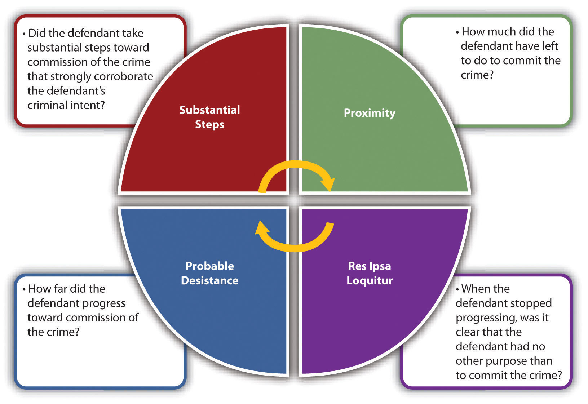
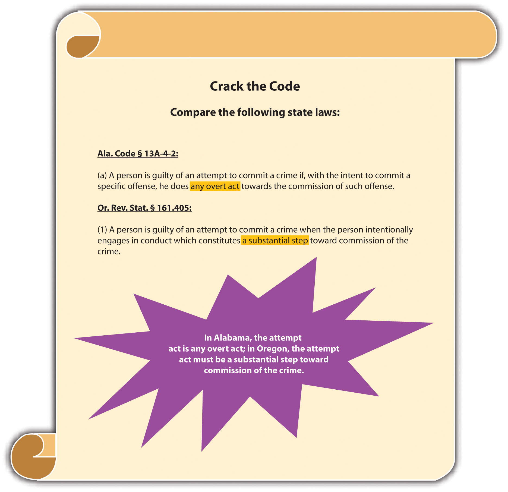
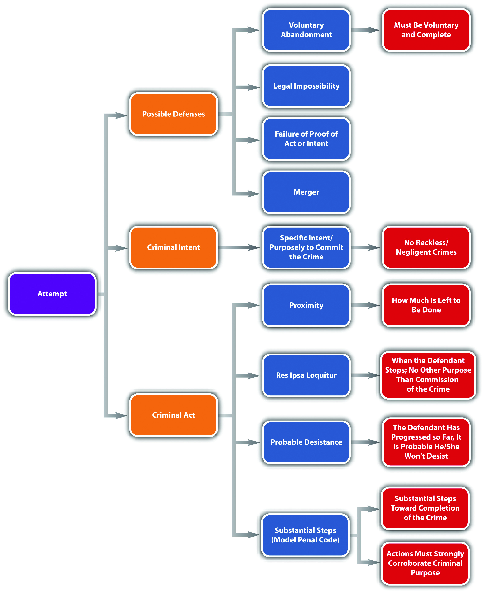

AttemptAn inchoate crime that criminalizes ineffectually trying to commit a criminal offense., conspiracy, and solicitation are considered inchoate crimesA crime that may not be completed.. Inchoate means “just begun, incipient, in the early stages.”Yourdictionary.com, accessed December 28, 2010, “Definition of Inchoate,” http://www.yourdictionary.com/inchoate. Inchoate crimes can be left unfinished, or incomplete. Although attempt never results in the finished criminal offense, both conspiracy and solicitation could give rise to separate completed crimes.
The rationale supporting punishment for an inchoate crime is prevention and deterrence. If a defendant could not be apprehended until a crime is finished, law enforcement would not be able to intervene and avert injury to victim(s) or property. In addition, a defendant who is unable to complete a crime would try again and again, free from any criminal consequences.
The difficulty in holding a defendant accountable for an inchoate or incomplete crime is ascertaining the level of progress necessary to impute criminal responsibility, which is especially daunting with attempt, because in every instance the crime is left unfinished, as is discussed in Section 8.1 "Attempt".
At early English common law, attempt was not a crime.Stephen J. Schulhofer, Dan M. Kahan, “Attempt,” encyclopedia.com website, accessed December 26, 2010, http://www.encyclopedia.com/topic/Attempt.aspx. Gradually, the law evolved, and a defendant who committed attempt resulting in severe harm was punished for a minor crime, typically a misdemeanor. One of the first documented cases of attempt was Rex v. Scofield, Cald. 397 (1784).Stephen J. Schulhofer, Dan M. Kahan, “Attempt,” encyclopedia.com website, accessed December 26, 2010, http://www.encyclopedia.com/topic/Attempt.aspx. In Scofield, a servant was convicted of a misdemeanor for attempting to burn down his master’s house with a lighted candle. A subsequent case, Rex v. Higgins, 102 Eng. Rep. 269 (K.B. 1801), upheld an indictment for attempted theft and firmly established the crime of attempt in English jurisprudence. In modern times, most states criminalize attempt, the majority in statutes, except in some states that permit common-law crimes. However, even in statutes, the word “attempt” is often left undefined, forcing courts to derive the meaning from common-law principles.
In general, there are two types of attempt statutes. Some states have general attempt statutes that set forth attempt elements and apply them to any criminal offense.Tex. Penal Code § 15.01, accessed December 27, 2010, http://law.onecle.com/texas/penal/15.01.00.html. Other states and the federal government have specific attempt statutes that define attempt according to specified crimes, such as murder, robbery, or rape.18 U.S.C. § 1113, accessed June 28, 2011, http://www.law.cornell.edu/uscode/718/usc_sec_18_00001113----000-.html. Keep in mind that several states do not criminalize attempt in a statute and consider it a common-law crime.Grill v. State, 337 Md. 91 (1995), accessed December 27, 2010, http://www.leagle.com/xmlResult.aspx?xmldoc=1995428337Md91_1422.xml&docbase=CSLWAR2-1986-2006.
The criminal act element required for attempt varies, depending on the jurisdiction. As Chapter 4 "The Elements of a Crime" stated, thoughts are not criminal acts. Thus a defendant does not commit attempt by plotting or planning an offense. An extension of this rule dictates that mere preparation is not enough to constitute the attempt criminal act element.People v. Luna, 170 Cal. App. 4th 535 (2009), accessed December 27, 2010, http://scholar.google.com/scholar_case?case=11148942163253518924&hl=en&as_sdt=2&as_vis=1&oi=scholarr. However, the crux of any attempt case is how close to completing the offense the defendant must get to fulfill the attempt criminal act requirement. In many statutes and cases, the attempt act is loosely defined to allow the trier of fact the flexibility needed to separate true criminal attempt from noncriminal preparation.
Jurisdictions use four tests to ascertain whether the defendant has committed the attempt criminal act: proximity testA test for the criminal act element required for attempt that measures how close the defendant is to completing the offense., res ipsa loquitur testA test for the criminal act element required for attempt that determines whether the defendant’s actions indicate no other purpose than to commit the crime at issue. Also called the unequivocality test., probable desistance testA test for the criminal act element required for attempt that ascertains that the defendant would probably not desist from completing the offense if it were not for the interruption by law enforcement or other intervening circumstances., and the Model Penal Code’s substantial steps testThe Model Penal Code’s test for the criminal act element required for attempt. The defendant must take substantial steps toward completion of the offense that are corroborative of the defendant’s criminal intent..
The proximity test measures the defendant’s progress by examining how close the defendant is to completing the offense. The distance measured is the distance between preparation for the offense and successful termination. It is the amount left to be done, not what has already been done, that is analyzed.Commonwealth v. Hamel, 52 Mass. App. Ct. 250 (2001), accessed December 29, 2010, http://scholar.google.com/scholar_case?case=3222223363179578849&hl=en&as_sdt=2&as_vis=1&oi=scholarr. In some jurisdictions, if the defendant’s criminal intent is clear, the defendant does not need to come as close to completion of the offense.People v. Dillon, 668 P.2d 697 (1983), accessed December 29, 2010, http://scholar.google.com/scholar_case?case=16336126005486548570&hl=en&as_sdt=2,5. Generally, the defendant does not have to reach the last step before completion,People v. Dillon, 668 P.2d 697 (1983), accessed December 29, 2010, http://scholar.google.com/scholar_case?case=16336126005486548570&hl=en&as_sdt=2,5. although many defendants do.
Melissa and Matthew decide they want to poison their neighbor’s dog because it barks loudly and consistently every night. Melissa buys some rat poison at the local hardware store. Matthew coats a raw filet mignon with the poison and throws it over the fence into the neighbor’s yard. Fortuitously, the neighbors are on an overnight camping trip, and the dog is with them. The next day, after a night of silence, Melissa feels regret and climbs over the fence to see what happened to the dog. When she sees the filet untouched on the ground, she picks it up and takes it back over the fence, later disposing of it in the trash. If Melissa and Matthew are in a jurisdiction that follows the proximity test, Melissa and Matthew have probably committed the criminal act element required for attempt. Melissa and Matthew finished every act necessary to commit the crime of destruction of property or animal cruelty (poisoning the dog). The only reason the crime was not successfully consummated was the absence of the dog, which is a circumstance outside their control. Thus Melissa and Matthew could most likely be charged with and convicted of this offense. If Melissa bought the rat poison but thereafter changed her mind and talked Matthew out of poisoning the dog, her actions would be a preparation, not a positive step toward commission of the crime. If Matthew coated the filet with poison but then changed his mind and threw the filet away, he would still be “too far” away from completing the offense. However, once the filet is thrown over the fence, the crime is proximate to completion; the only step left is the victim’s (dog’s) participation.
Res ipsa loquitur means “the thing speaks for itself.”USLegal.com, “Definition of Res Ipsa Loquitur,” accessed December 29, 2010, http://definitions.uslegal.com/r/res-ipsa-loquitur. The res ipsa loquitur test, also called the unequivocality test, analyzes the facts of each case independently. Under res ipsa loquitur or unequivocality, the trier of fact must determine that at the moment the defendant stopped progressing toward completion of the offense, it was clear that the defendant had no other purpose than commission of the specific crime at issue. This determination is based on the defendant’s act—which manifests the intent to commit the crime.Hamiel v. Wisconsin, 285 N.W.2d 639 (1979), accessed December 30, 2010, http://scholar.google.com/scholar_case?case=3730801887783687670&hl=en&as_sdt=2002&as_vis=1.
Harry wants to kill his wife Ethel for the proceeds of her life insurance policy. Harry contacts his friend Joe, who is reputed to be a “hit man,” and sets up a meeting for the next day. Harry meets with Joe and asks him if he will murder Ethel for one thousand dollars. Joe agrees, and Harry pulls out a wad of cash and pays him. Unfortunately for Harry, Joe is a law enforcement decoy. If the state in which Harry paid Joe recognizes the res ipsa loquitur or unequivocality test, Harry has most likely committed attempted murder (along with solicitation to commit murder, which is discussed shortly). Harry’s actions in contacting and thereafter hiring and paying Joe to kill Ethel indicate that he has no other purpose than the commission of Ethel’s murder. Hiring and paying a hit man is more than just preparation. Note that evidence of Ethel’s life insurance policy is not needed to prove the attempt act. Harry’s conduct “speaks for itself,” which is the essence of res ipsa loquitur or unequivocality.
The probable desistance test examines how far the defendant has progressed toward commission of the crime, rather than analyzing how much the defendant has left to accomplish. Pursuant to this test, a defendant commits attempt when he or she has crossed a line beyond which it is probable he or she will not desist unless there is an interruption from some outside source, law enforcement, or circumstances beyond his or her control.See discussion in U.S. v. Mandujano, 499 F.2d 370, 373 fn. 5 (1974), accessed December 30, 2010, http://ftp.resource.org/courts.gov/c/F2/499/499.F2d.370.74-1445.html.
Judy, who works at Zales jewelry store, tells her Facebook friends that she is going to steal a diamond necklace out of the safe that evening. Judy drives to Zales at eleven o’clock after the store has closed. She enters the building using her key and quickly disables the store alarm. She then turns off the store security camera. As she crouches down by the safe and begins to enter the combination, all the lights go on and she blinks, startled by the sight of several police officers pointing their guns at her. If the state in which Judy lives follows the probable desistance test, Judy has most likely committed attempted larceny, along with burglary. Judy informed others of her plan, drove to the crime scene, entered the building unlawfully, disabled the store alarm, and turned off the store security camera. This series of actions indicate that Judy crossed a point of no return. It is unlikely that Judy would have desisted without the law enforcement interruption, which fulfills the attempt act requirement pursuant to the probable desistance test.
The Model Penal Code developed the substantial steps test in response to the large variance between different jurisdictions in evaluating the criminal act element required for attempt. The substantial steps test is intended to clarify and simplify the attempt act analysis, to prevent arbitrary application. It is also a test that is more likely to result in a conviction because it classifies as “substantial” those acts the other tests might consider only “preparatory.”People v. Dillon, 668 P.2d 697, 720, fn.1 (1983), accessed December 30, 2010, http://scholar.google.com/scholar_case?case=16336126005486548570&hl=en&as_sdt=2002&as_vis=1.
The substantial steps test has two parts. First, the defendant must take substantial steps toward completion of the crime. As the Model Penal Code states, “[a] person is guilty of an attempt to commit a crime if…he…does…anything which…is an act or omission constituting a substantial step in a course of conduct planned to culminate in his commission of the crime” (Model Penal Code § 5.01(1)(c)). Second, the defendant’s actions must be “strongly corroborative of the actor’s criminal purpose” (Model Penal Code § 5.01(2)). To further elucidate the test, the Model Penal Code provides seven examples of actions that constitute substantial steps, as long as they are corroborative of the defendant’s intent. The seven examples are lying in wait; enticing the victim to go to the scene of the crime; investigating the potential scene of the crime; unlawfully entering a structure or vehicle where the crime is to be committed; possessing materials that are specially designed for unlawful use; possessing, collecting, or fabricating materials to be used in the crime’s commission; and soliciting an innocent agent to commit the crime (Model Penal Code § 5.01(2)).
Kevin wants to rob an armored car that delivers cash to the local bank. After casing the bank for two months and determining the date and time that the car makes its delivery, Kevin devises a plan that he types on his computer. On the date of the next delivery, Kevin hides a weapon in his jacket pocket and makes his way on foot to the bank. Thereafter, he hides in an alley and waits for the truck to arrive. When the truck drives up and parks in front of the bank, Kevin walks over to the driver’s door and reaches for his weapon. He is immediately apprehended by a security guard who saw him emerge from the alley. If Kevin is in a substantial steps jurisdiction, he has probably committed the criminal act element required for attempt. Kevin cased the bank, planned the robbery, showed up on the appointed date and time with a concealed weapon, and hid in an alley to wait for the truck to appear. These actions are (1) investigating the potential scene of the crime, (2) possessing materials to be used in the crime’s commission, and (3) lying in wait. Thus Kevin has completed three substantial steps that corroborate his intent as expressed in the plan he typed, which is most likely sufficient to constitute the attempt criminal act element under the Model Penal Code.
Figure 8.1 Various Tests for Attempt Act
Figure 8.2 Crack the Code
Some states have statutes criminalizing behavior that would be considered preparatory under any of the four attempt act tests. For example, some statutes prohibit the mere possession of burglar’s toolsN.Y. Penal Law § 140.35, accessed December 31, 2010, http://law.onecle.com/new-york/penal/PEN0140.35_140.35.html. or even the manufacture of burglar’s tools.Conn. Gen. Stat. § 53a-106, accessed December 31, 2010, http://www.cga.ct.gov/2009/pub/chap952.htm#Sec53a-106.htm. A defendant could be convicted of a preparatory crime and attempt if the criminal act element for both is present under the circumstances.
Hal manufactures a lock pick and takes it to the local coin shop, which is closed. Hal takes the lock pick out and begins to insert it into the coin shop doorknob. A security guard apprehends Hal before he is able to pick the lock. If Hal is in a jurisdiction that prohibits the manufacture of burglar’s tools, he probably could be charged with and convicted of manufacture of burglar’s tools and attempted burglary because he has committed the criminal act element required for both of these offenses.
The criminal intent element required for attempt in the majority of jurisdictions is the specific intent or purposely to commit the crime at issue.N. Y. Penal Law § 110.00, accessed December 31, 2010, http://law.onecle.com/new-york/penal/PEN0110.00_110.00.html. Generally, no such thing exists as reckless or negligent attempt. Thus if the prosecution fails to prove beyond a reasonable doubt that the defendant acted purposefully with intent to commit the crime attempted, this could operate as a failure of proof defense.
Eric is hiking in a jurisdiction that criminalizes reckless burning. Eric pauses in front of a sign that states “Fire Danger Today: High.” Eric reads the sign, pulls out a cigarette, lights it, and throws the lit match into some dry brush near the sign. He starts hiking and when he finishes his cigarette, he tosses the lit cigarette butt into some arid grass. Neither the brush nor the grass burns. Eric probably does not have the requisite criminal intent for attempted reckless burning. Attempt requires purposeful conduct. Eric’s conduct is reckless because he is aware of a risk and disregards it. If Eric takes the match or lit cigarette and tries to ignite a fire with them, it is likely that he has the appropriate criminal intent for attempted arson. However, in this case Eric’s actions demonstrate careless behavior that probably is not sufficient for the crime of attempt.
Along with failure of proof defenses to the criminal act and criminal intent elements, legal impossibilityA defense to attempt if the defendant is attempting to commit a legal act that he or she believes is illegal. and voluntary abandonmentA defense to attempt if the defendant voluntarily and completely withdraws from commission of the offense before it is consummated. can also function as affirmative defenses to attempt in many jurisdictions.
Two types of impossibility defenses exist: legal impossibility, which can function as a defense to attempt, and factual impossibilityThe defendant cannot complete the offense because the facts are not as he or she believes them to be. Generally not a defense to attempt., which generally cannot. Legal impossibility means that the defendant believes what he or she is attempting to do is illegal, when it is not. Factual impossibility means that the defendant could not complete the crime attempted because the facts are not as he or she believes them to be. The Model Penal Code disallows factual impossibility as a defense by stating that conduct is an attempt when the defendant “purposely engages in conduct which would constitute the crime if the attendant circumstances were as he believes them to be” (Model Penal Code § 5.01(1) (a)).
Review the example given in Section 8 "Res Ipsa Loquitur Test" with Melissa and Matthew and the attempted poisoning of the neighbor’s dog. Assume that Melissa is eighteen. Melissa believes that an individual must be twenty-one to purchase rat poison because that is the law in the state where she lived five years ago. Actually, the state in which Melissa currently resides allows the purchase of rat poison by those who are eighteen or older. The first store Melissa enters asks for identification when she tries to pay for the rat poison, so Melissa makes an excuse and leaves. The second store Melissa enters does not ask for identification, and she successfully makes the rat poison purchase. Melissa has probably not attempted to purchase rat poison illegally in the first store she entered. Melissa’s act in attempting to purchase the rat poison is legal under the circumstances. Thus her mistaken belief that she is attempting to commit a crime does not transform this legal act into an illegal one.
Recall from the example given in Section 8 "Res Ipsa Loquitur Test" that Matthew threw a filet coated with rat poison over the fence into the neighbor’s yard with the intent to poison the neighbor’s dog. Both Melissa and Matthew are under the mistaken belief that the dog is present and will eat the filet. However, the dog is on an overnight camping trip with its owners. This mistake of fact probably will not excuse Melissa and Matthew’s attempt. Melissa and Matthew purposely engaged in conduct that would result in the poisoning of the dog if the facts were as Melissa and Matthew believed them to be. Thus Melissa and Matthew have most likely committed attempted destruction of property or animal cruelty regardless of the fact that their plan could not succeed under the circumstances.
Many jurisdictions allow a defendant who voluntarily abandons the planned offense to use this abandonment as an affirmative defense to attempt.Fla. Stat. Ann. § 777.04(5) (a), accessed December 31, 2010, http://law.justia.com/florida/codes/2003/TitleXLVI/chapter777/777_04.html. The defense has two parts. First, the defendant must have a change of heart that is not motivated by an increased possibility of detection, or a change in circumstances that make the crime’s commission more difficult. As the Model Penal Code states, “it is an affirmative defense that he abandoned his effort to commit the crime…under circumstances manifesting a complete and voluntary renunciation of his criminal purpose…[R]enunciation of criminal purpose is not voluntary if it is motivated…by circumstances…which increase the probability of detection…or which make more difficult the accomplishment of the criminal purpose” (Model Penal Code § 5.01(4)). Second, the abandonment must be complete and cannot simply be a postponement. Under the Model Penal Code, “[r]enunciation is not complete if it is motivated by a decision to postpone the criminal conduct until a more advantageous time or to transfer the criminal effort to another but similar…victim” (Model Penal Code § 5.01(4)). The voluntary abandonment defense gives defendants incentive to stop progressing toward consummation of the offense and prevents the crime from occurring without the need for law enforcement intervention.
Review the example with Melissa and Matthew in Section 8 "Res Ipsa Loquitur Test". If Melissa changes her mind after purchasing the rat poison and talks Matthew out of poisoning the neighbor’s dog, Melissa has voluntarily abandoned the crime and cannot be charged with attempt. If Matthew changes his mind after coating the filet with rat poison and throws the filet away, Matthew has voluntarily abandoned the crime and cannot be charged with attempt. Note that both Melissa’s and Matthew’s actions are in the very early stages of the crime of destruction of property or animal cruelty and probably will be considered preparatory, rather than constituting the criminal act element required for attempt. When Melissa climbs over the fence, picks up the filet, and takes it back to her house for disposal, it is most likely too late to voluntarily abandon the crime. At this point, the crime of attempt has already been committed, and neither voluntary abandonment nor factual impossibility can function as defenses.
Attempt mergesWhen one offense combines with another. Attempt merges into the completed offense in many jurisdictions. into the crime if the crime is completed in many jurisdictions, which means that the defendant cannot be charged with attempt and the completed crime.Ga. Code tit. 16 § 16-4-2, accessed January 28, 2011, http://law.onecle.com/georgia/16/16-4-2.html.
Review the example with Melissa and Matthew in Section 8 "Res Ipsa Loquitur Test". Change the facts, and assume that the neighbor’s dog eats the poisoned filet and dies. Melissa and Matthew probably cannot be charged with attempted destruction of property or animal cruelty and destruction of property or animal cruelty in many jurisdictions. Once the crime is complete, the attempt crime merges into the consummated offense, and Melissa and Matthew may be charged only with destruction of property or animal cruelty.
Figure 8.3 Defenses to Attempt
Recall from Chapter 4 "The Elements of a Crime" that a defendant’s criminal intent can transfer from the intended victim to the actual victim in some jurisdictions. If the intent is transferred, the defendant may be criminally responsible for the consummated offense against the eventual victim and for attempt against the intended victim.
Review the example with Melissa and Matthew in Section 8 "Res Ipsa Loquitur Test". Change the facts, and assume that the neighbor’s cat licks the poison off the filet and thereafter dies. If Melissa and Matthew are in a jurisdiction that recognizes transferred intent, they may be charged with attempted destruction of property or animal cruelty for trying to poison the neighbor’s dog and destruction of property or animal cruelty for actually poisoning and killing the neighbor’s cat.
Jurisdictions vary as to how they grade attempt. Some jurisdictions follow the common law and grade attempt lower than the completed offense.Mo. Ann. Stat. § 564.011, accessed December 31, 2010, http://law.justia.com/missouri/codes/2005/t38/5640000011.html. Other jurisdictions punish attempt the same as the attempted offense, with exceptions for certain specified crimes.Conn. Gen. Stat. § 53-a-51, accessed December 31, 2010, http://www.cga.ct.gov/2001/pub/Chap952.htm#sec53a-51.htm.
Figure 8.4 Diagram of Attempt
Answer the following questions. Check your answers using the answer key at the end of the chapter.